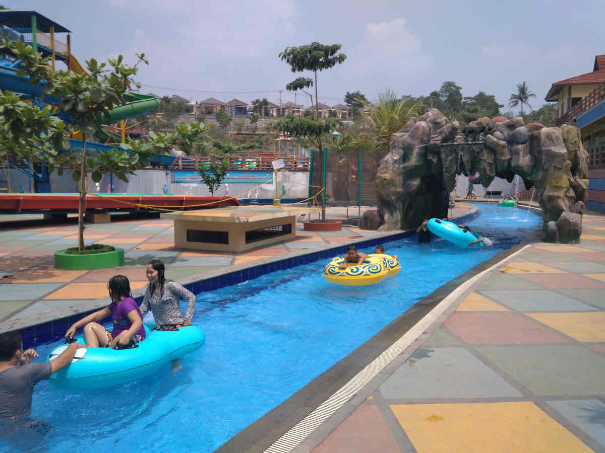
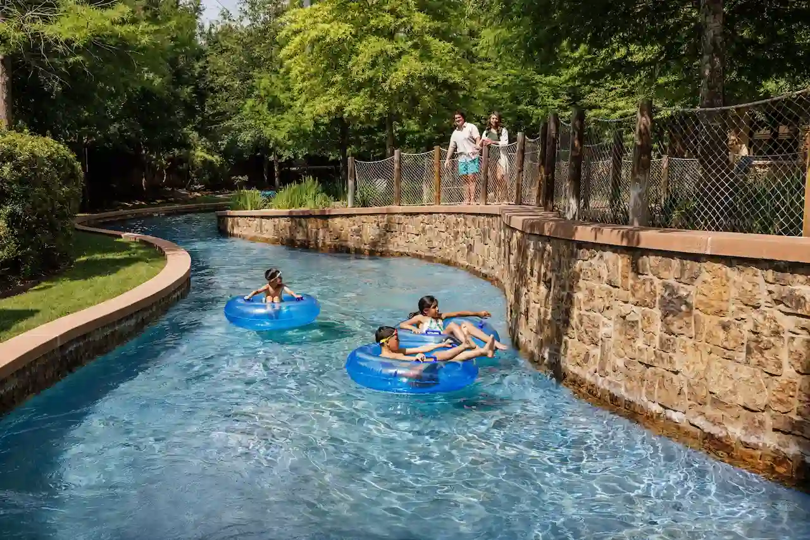
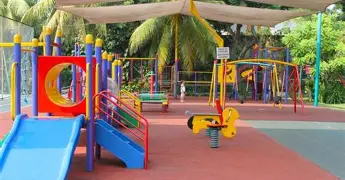
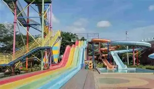
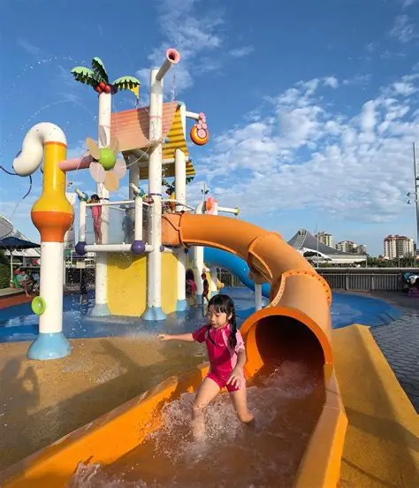

Alamat


Deskripsi
Waterpark Siantar adalah wahana rekreasi air yang menawarkan kolam renang untuk dewasa dan anak-anak, seluncuran, ember tumpah, dan wahana bermain air lainnya.
Waterpark ini terletak di Jl. Rakutta Sembiring dan menjadi alternatif destinasi wisata keluarga di akhir pekan. Meskipun data resmi mengenai luas area atau tahun berdirinya tidak tersedia, waterpark ini tetap populer sebagai tempat rekreasi modern bagi warga dan wisatawan yang ingin menikmati keseruan wahana air di Pematangsiantar.
Wahana Unggulan

Seluncuran Spiral

Kolam Ombak

Lazy River

Area Bermain Anak
Spot Foto Populer

Gerbang Utama

Area Kolam Ombak

Seluncuran Warna-warni

Water Playground